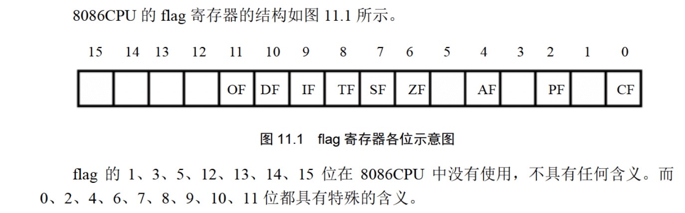

汇编语言基础知识复习
寄存器
通用寄存器
- 32位:EAX EBX ECX EDX ESI EDI
- 64位:RAX RBX RCX RDX RSI RDI R8-R15
- 16位: AX BX CX DX SI DI (还可继续细分位高八位和第八位,例如AX还可分为AH和AL)
段寄存器和指针变址寄存器
(前面加上R就是64位,加上E就是32位,这里先省略了)
代码段寄存器CS, 指令指针寄存器IP
CPU默认将
CS:IP指向的内容作为指令来执行,加载一个程序时,CS:IP自动指向程序的入口处在读取完一条指令后,IP的值会自动增加,准备读取下一条指令
mov指令不能直接用于修改cs:ip的值. 因而mov cs 0001H这种指令是不被允许的可以通过
jmp指令来实现对cs:ip的修改,例如:1
2jmp x:y # 将cs的值修改为x,ip的值修改为y,接下来将读取x:y处存放的指令
jmp ax # 将ax中的值给ip,cs不变数据段寄存器DS和指示数据地址的
[address]这里
[address]相当于去address这个地址的位置去取数据,相当于c语言中的*当设置好了DS的值后,直接通过[x]就可以取到ds:[x]这个位置的值,例如:1
2
3mov bx,1000H
mov ds,bx
mov al,[0] 这里就相当于将 从ds:[0]处取一个字节(8位)存入al栈段寄存器SS和栈顶指针寄存器SP,以及栈底指针寄存器BP
ss:sp指向栈顶(PUSH入栈时,sp值减小,栈顶上移;POP出栈时,sp值增大,栈顶下移)(栈是从高地址向低地址增长)ss:bp指向当前函数栈帧的底部此外段寄存器还有ES,FS,GS等,用到了再补充
标志位寄存器
ZF：执行结果是否为0（1为是，0为否）
PF：执行的二进制结果中1的个数是否为偶数(奇偶校验标识)
SF：进行有符号运算时，执行结果是否为负（补码机制）
CF：进行无符号运算时，是否需要进位（结果超出寄存器范围）或者借位（结果小于0）
AF : 辅助进位标识, 运算结果第三位进位时置1
OF: 溢出标识, 进行有符号运算时，有无溢出（溢出会导致运算结果不正确）
指令
- 有条件跳转:(根据特定标志位的值来决定是否跳转)
| 指令和说明 | cmp a,b的结果 |
标志位条件 |
|---|---|---|
| jz/je 为零则跳转 | a=b | ZF=1 |
| jnz/jne 不为零则跳转 | a!=b | ZF=0 |
| jc 进位则跳转 | CF=1 | |
| jnc 不进位则跳转 | CF=0 | |
| jo 溢出则跳转 | OF=1 | |
| jon 无溢出则跳转 | OF=0 | |
| js有符号跳转 | SF=1 | |
| jns无符号跳转 | SF=0 | |
| jp偶校验跳转 | PF=1 | |
| jnp奇校验跳转 | PF=0 | |
| jb jl小于则跳转 jnae jna jng jnge不大于则跳转 | a<b a<=b | |
| ja jg大于则跳转 jnbe jnb jnl jnle不小于则跳转 | a>b a>=b |
本博客所有文章除特别声明外，均采用 CC BY-NC-SA 4.0 许可协议。转载请注明来自 逃 避 現 實！